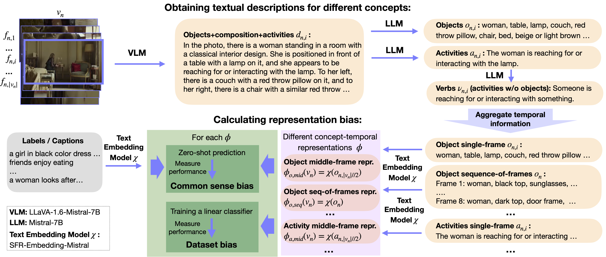

Nina Shvetsova1,2,3*, Arsha Nagrani4, Bernt Schiele3, Hilde Kuehne1,2,5, Christian Rupprecht4
1Goethe University Frankfurt, 2Tuebingen AI Center/University of Tuebingen, 3MPI for Informatics, Saarland Informatics Campus, 4University of Oxford, 5MIT-IBM Watson AI Lab
*Work done during PhD visit to University of Oxford within the ELLIS PhD program.
Contact: shvetsov at uni-frankfurt.de
We propose a new Unbiased through Textual Description (UTD) video benchmark based on unbiased subsets of existing video classification and retrieval datasets to enable a more robust assessment of video understanding capabilities. Namely, we tackle the problem that current video benchmarks may suffer from different representation biases, e.g., object bias or single-frame bias, where mere recognition of objects or utilization of only a single frame is sufficient for correct prediction. We leverage VLMs and LLMs to analyze and debias video benchmarks from such representation biases. Specifically, we generate frame-wise textual descriptions of videos, filter them for specific information (e.g. only objects) and leverage them to examine representation biases across three dimensions: 1) concept bias — determining if a specific concept (e.g., objects) alone suffice for prediction; 2) temporal bias — assessing if temporal information contributes to prediction; and 3) common sense vs. dataset bias — evaluating whether zero-shot reasoning or dataset correlations contribute to prediction. We conduct a systematic analysis of representation biases in 12 popular video classification and retrieval datasets and create new object-debiased test splits for these datasets. Moreover, we benchmark 33 state-of-the-art video models on original and debiased splits and analyze biases in the models. To facilitate the future development of more robust video understanding benchmarks and models, we release: UTD-descriptions, a dataset with our rich structured descriptions for each dataset, and UTD-splits, a dataset of object-debiased test splits.
⬇ Download UTD-descriptions (3.5G) | ⬇ Download UTD-splits (3.9M) | ⬇ Download all data (7.4G)
Our UTD Dataset consists of two parts:
Considered datasets:
Activity recognition datasets include
UCF101,
SSv2,
Kinetics400,
Kinetics600,
Kinetics700,
and Moments In Time.
Text-to-video retrieval datasets include
MSRVTT,
YouCook2,
DiDeMo,
LSMDC,
ActivityNet,
and Spoken Moments in Time.
UTD-descriptions provide annotations for a total of 1.9M videos, with 8 uniformly sampled frames annotated per video. Each frame is annotated with four different concept categories: objects, activities, verbs, and objects+composition+activities for the 12 considered datasets, covering both train and test/val splits. For test/val splits, we additionally provide objects+composition+activities_15_words — a ~15-words summary of objects+composition+activities descriptions. The annotations for objects+composition+activities are generated using the LLaVA-1.6-7B-mistral large vision-language model, prompted to describe visible object relationships in a frame. From these descriptions, objects, activities, and verbs (activities without associated objects) are extracted using the Mistral-7B-Instruct-v0.2.
We follow the standard train/test/val splits of each dataset. Namely, we use validation sets for SSv2, Kinetics400, Kinetics600, Kinetics700, Moments In Time, YouCook2, and ActivityNet, and test sets for UCF101 (testlist01), MSRVTT (1k test set), DiDeMo, LSMDC, and Spoken Moments in Time.
For each video, 8 frames are annotated — one from the center of each of 8 equal temporal segments. Note: due to the large size and video overlap in the MiT and S-MiT training sets, we annotate approx. 300k training videos shared between them. All other datasets have full training annotations.
We also share UTD-descriptions-raw: a version that stores raw outputs from VLM and LLM models for each concept category. In the curated UTD-descriptions version, we post-process textual descriptions by removing bracketed content and numbering.
⬇ Download UTD-descriptions (3.5G) | ⬇ Download UTD-descriptions-raw (3.9G)
Each file is a .json file containing a dictionary with video IDs as keys. For each video ID,
the values include:
objects+composition+activities: list of 8 textual descriptions (one per frame)objects: list of object-level descriptions per frameactivities: list of activity descriptions per frameverbs: list of activity descriptions without objects per frameobjects+composition+activities_15_words: (test/val only) a ~15-word summary per frameimport json
with open('annotations_ucf_testlist01.json') as fin:
data = json.load(fin)
data['v_ApplyEyeMakeup_g01_c02']{
'objects+composition+activities': [
"In the photo, there is a person applying makeup, specifically eyeliner, to their eye. The person is holding a makeup brush in their right hand...",
"In the photo, there is a person who appears to be applying makeup. The person is holding a makeup brush in their right hand..."
...
],
'objects': [
"person, makeup brush, makeup applicator, mirror, table or countertop, chair, suitcase.", ...
],
'activities': [
"A person is applying eyeliner. A person is holding a makeup brush...", ...
],
'verbs': [
"Someone is applying something. Someone is holding something.", ...
],
'objects+composition+activities_15_words': [
"Person applying eyeliner with brush in hand, seated near mirror and chair, suitcase behind.", ...
]
}UTD-splits include object-debiased test/val splits for the 12 considered datasets. Object-debiased splits are subsets of the original test/val sets, where videos identified as object-biased have been removed. For the 6 activity recognition datasets, we additionally provide debiased-balanced splits, where the most object-biased samples are removed while preserving the original class distribution to ensure fair evaluation across categories.
Note: Due to unavailability of certain videos in some datasets, a small number of video IDs may be excluded entirely.
⬇ Download UTD-splits (3.9M)
Each file is a JSON file containing a dictionary with three keys:
full – List of video IDs in the original test/val split of the corresponding datasetdebiased – List of video IDs for the UTD-debiased test/val split, where object-biased items are removeddebiased-balanced – List of video IDs for the UTD-debiased-balanced test/val split, where the most object-biased samples are removed
while preserving the original class distributionimport json
with open('splits_ucf_testlist01.json') as fin:
data = json.load(fin)
print(data){
"full": ["v_ApplyEyeMakeup_g01_c01", "v_ApplyEyeMakeup_g01_c02", ...],
"debiased": ["v_ApplyEyeMakeup_g01_c01", "v_ApplyLipstick_g01_c03", ...],
"debiased-balanced": ["v_ApplyEyeMakeup_g01_c01", "v_ApplyLipstick_g01_c02", ...],
}
The UTD dataset is released under the Creative Commons Attribution 4.0 International (CC BY 4.0) license.
Terms and conditions: http://creativecommons.org/licenses/by/4.0
Note: Some parts of the underlying datasets may be subject to their own licensing terms. Please ensure compliance with the original dataset licenses.
@article{shvetsova2025utd,
title={Unbiasing through Textual Descriptions: Mitigating Representation Bias in Video Benchmarks},
author={Shvetsova, Nina and Nagrani, Arsha and Schiele, Bernt and Kuehne, Hilde and Rupprecht, Christian},
booktitle={Proceedings of the IEEE/CVF Conference on Computer Vision and Pattern Recognition},
year={2025}
}